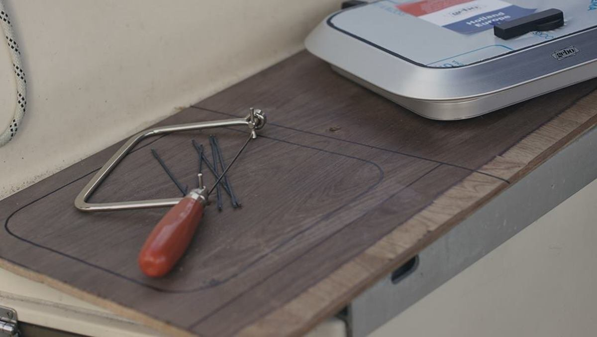
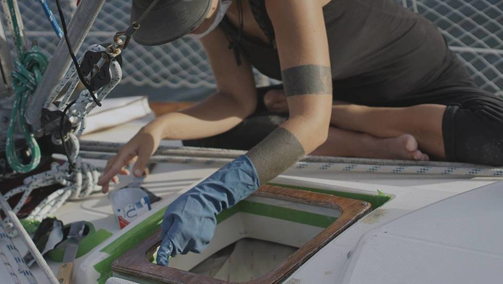
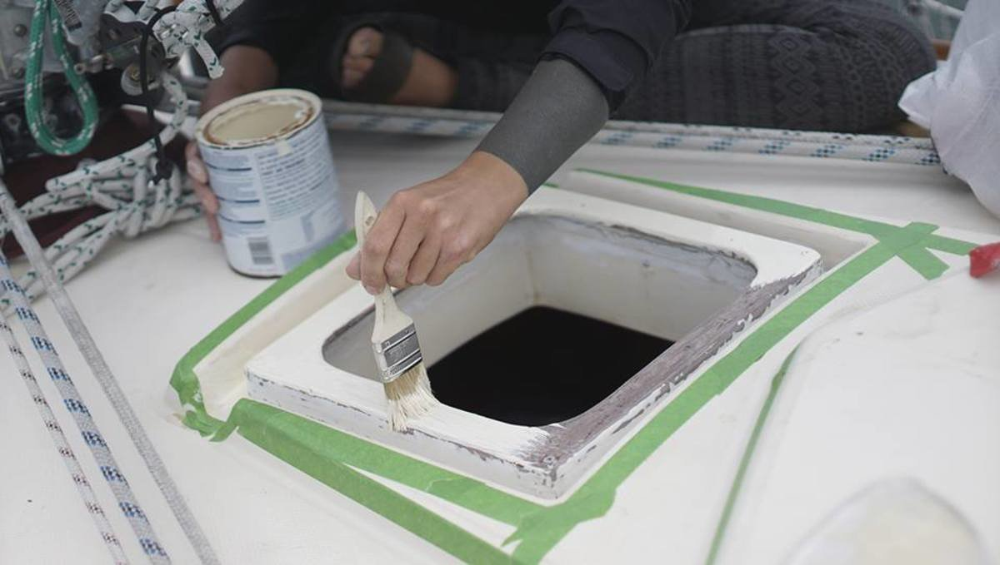
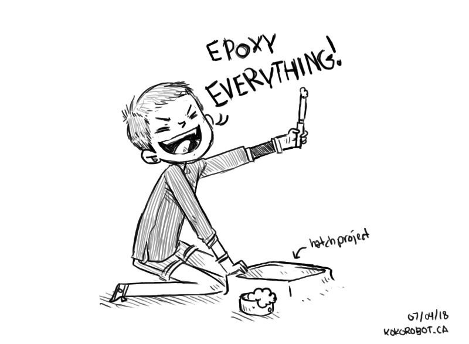
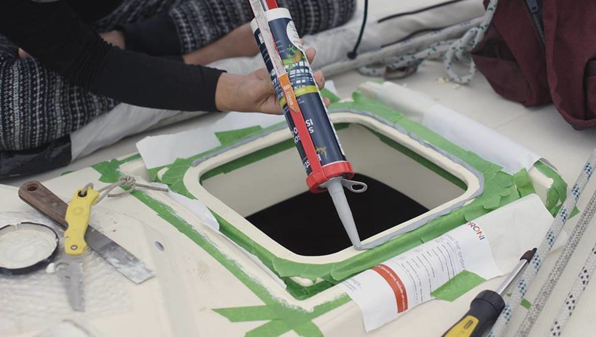
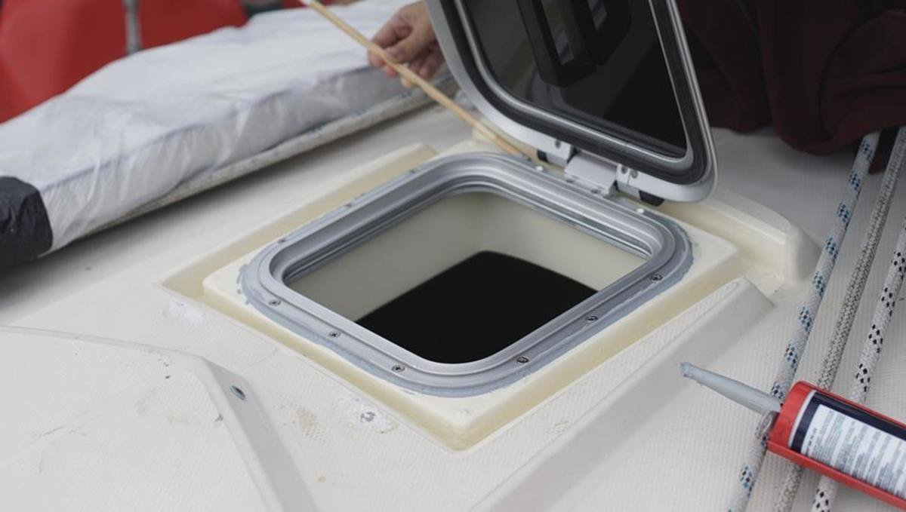
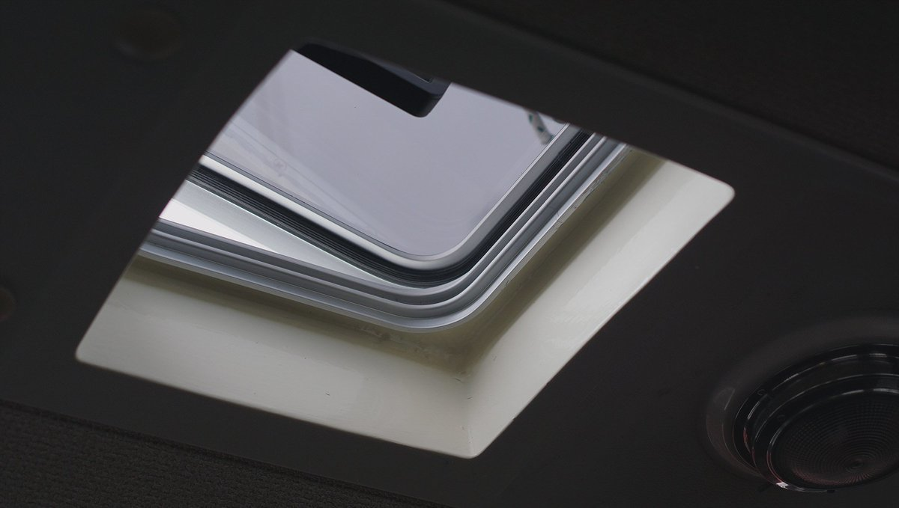
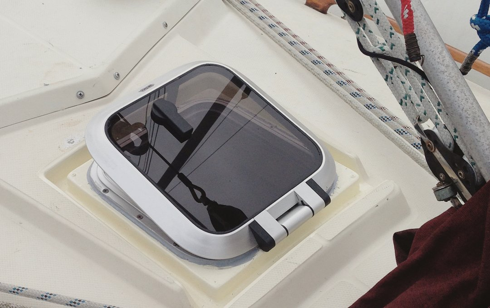

saloon hatch
19.05.12
Whangarei, New Zealand
We wanted to replace our saloon hatch, which was really just a thick piece of acrylic fastened by SS fittings, and that closed onto a rubber seal. That seal was beyond done, dried up and crusty by sun and salt. The rubber seal was not protected from the sunlight at all, it's a poor design if you're sailing in warm and sunny places. The acrylic did not look great either, all the more reason to replace the whole thing.
During our transit to NZ, sea water came in past the crusty seal while I was asleep, a wave splashed over the bow, and slipped inside, sending a torrent of wetness where I was sleeping. The sleeping bag and the cushions were wet. I remember grabbing a cushion then, and shoving it in the 27x27cm hole and keeping it wedged up there with layers, upon layers of duct tape. This wasn't the best solution. In my defense, I was half asleep, kind of dazed, and grabbed whatever I could find in the dark. It was funny to find the next day though, a cushion thick with salt water and compressed into a tiny space bound by an infinity of tape.
We bought a small GEBO hatch from Seamac in Whangarei to replace it.
Again, this proved to be a difficult project because the window was too small for the existing hole. We had to cut a platform out of wood, with the outer edge matching the outside part of the hole, then, we would have to cut a hole in it, sized for the new hatch. We didn't have access to a workshop, and the wood was very, very dense (our mistake). We used a handsaw to cut it, and it took AGES, many hours of sawing interspersed with bouts of whining and thoughts of dying of old age with this piece of wood, still uncut.
We drilled some holes into the fibreglass, pencilled some guides into the wooden frame, and drilled holes onto it too. We then placed the wooden frame over the hole, and screwed it into place. Then, we epoxied the hell out of that frame, making it one with the existing body of the boat. We epoxied, waited, sanded, epoxied again, waited, sanded... till it was nice and smooth.
We painted the entire frame, to a color approximating that of our boat, except that it had a subtle yellow tint. We also epoxied and painted the area inside the cabin, making for a smooth transition.
 Then, we marked up holes for our new hatch onto our shiny new base, where the window was going to go, and drilled holes into it. We scuffed the surface of the base lightly, then added some spacers all around, solidified with contact glue. The spacers will ensure an even thickness of sealant all around, between the hatch and the base. Once dry, we applied a sealant, grey stuff, that ensures aluminum to fibreglass adhesion. Then, we pressed the window onto it, and put the screws in. We added more sealant around the edges, tooling it in for a clean finish, soapy water at hand, and did the same inside.
Hatch project was done.
Takeaway: Maybe, if you can, install the window at a slant, so the water won't collect on it.
Hatch 300$
 